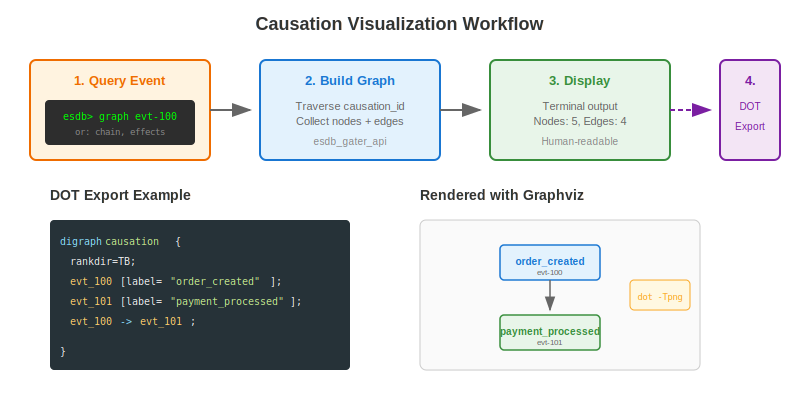

Interactive REPL
View SourceThe reckon-gater REPL (Read-Eval-Print-Loop) provides an interactive shell for exploring event stores, streams, causation chains, and temporal queries. It's designed for developers to quickly inspect and debug event-sourced systems without writing code.

Overview
The REPL provides a stateful session that maintains context about:
- Current store - Which event store you're connected to
- Current stream - Which event stream is selected for operations
This context-aware design means you don't need to specify the store and stream for every command once they're selected.
Quick Start
Start the REPL from an Erlang shell:
%% Start without a store selected
esdb_gater_repl:start().
%% Start with a store pre-selected
esdb_gater_repl:start(my_store).Command Reference
Store Commands
stores List all stores
use STORE Set current store contextExample session:
esdb> stores
Stores:
my_store
another_store
esdb> use my_store
Switched to store: my_store
esdb:my_store>Stream Commands
streams List streams in current store
stream STREAM Set current stream context
read [N] Read N events (default 10)
read STREAM [N] Read N events from stream
version Get version of current stream
version STREAM Get version of streamExample session:
esdb:my_store> streams
Streams in my_store:
orders
customers
products
Total: 3 streams
esdb:my_store> stream orders
Switched to stream: orders
esdb:my_store/orders> read 5
[0] order_created: evt-123
[1] order_paid: evt-124
[2] order_shipped: evt-125
[3] order_delivered: evt-126
[4] order_completed: evt-127
Total: 5 events
esdb:my_store/orders> version
Version: 127Causation Commands
Causation tracking is one of the most powerful features of the REPL. It allows you to trace the lineage of events through your system.

effects ID Get events caused by event
cause ID Get event that caused this
chain ID Get full causation chain
graph ID Build and display causation graph
dot ID FILE Export graph as Graphviz DOT fileExample session:
esdb:my_store> effects evt-100
Events caused by evt-100:
[0] payment_processed: evt-101
[1] inventory_reserved: evt-102
Total: 2 effects
esdb:my_store> chain evt-105
Causation chain to evt-105:
[1] order_created (evt-100)
-> [2] payment_processed (evt-101)
-> [3] inventory_reserved (evt-102)
-> [4] order_shipped (evt-104)
-> [5] delivery_scheduled (evt-105)
Chain length: 5
esdb:my_store> dot evt-100 /tmp/causation.dot
DOT file written to: /tmp/causation.dotTo visualize the DOT file:
dot -Tpng /tmp/causation.dot -o /tmp/causation.png
Temporal Commands
until TS Read events until timestamp
range T1 T2 Read events in time rangeTimestamps are Unix epoch in seconds.
Example session:
esdb:my_store/orders> until 1703200000
Events until 1703200000:
[0] order_created: evt-123
[1] order_paid: evt-124
Total: 2 events
esdb:my_store/orders> range 1703100000 1703200000
Events from 1703100000 to 1703200000:
[0] order_created: evt-123
[1] order_paid: evt-124
[2] order_shipped: evt-125
Total: 3 eventsSchema Commands
schemas List all schemas
schema TYPE Get schema for event typeSubscription Commands
subscriptions List all subscriptions
subscription NAME Get subscription detailsHealth Commands
health Gateway health status
memory Memory statistics for current storeExample:
esdb> health
Gateway Health:
status: healthy
stores: #{my_store => 3, another_store => 2}
total_workers: 5
node: 'node1@localhost'
timestamp: 1703234567890Prompt Format
The prompt shows your current context:
esdb> # No store selected
esdb:my_store> # Store selected
esdb:my_store/orders> # Store + stream selectedTips
Tab completion: Not supported yet, but coming in a future release.
History: Use up/down arrows if your shell supports it (depends on terminal).
Batch operations: For bulk operations, use the
esdb_gater_apimodule directly instead of the REPL.DOT files: The
dotcommand generates Graphviz DOT format, which can be converted to PNG, SVG, or PDF using thedotcommand-line tool.
Use Cases
Debugging Event Flows
When an event causes unexpected behavior, use causation commands to trace its origin:
esdb:my_store> chain problematic-event-idThis shows the full chain of events that led to the problematic event, helping identify where things went wrong.
Investigating Time-Based Issues
For issues that occurred at a specific time, use temporal queries:
esdb:my_store/orders> range 1703100000 1703110000This shows all events in the orders stream during that 10-second window.
Exporting Visualizations
Generate DOT files for documentation or sharing:
esdb:my_store> dot correlation-id-123 /tmp/saga-flow.dotThen convert to various formats:
# PNG image
dot -Tpng /tmp/saga-flow.dot -o /tmp/saga-flow.png
# SVG (scalable)
dot -Tsvg /tmp/saga-flow.dot -o /tmp/saga-flow.svg
# PDF document
dot -Tpdf /tmp/saga-flow.dot -o /tmp/saga-flow.pdf
Monitoring Health
Quick health check of the gateway:
esdb> healthCheck memory pressure for a specific store:
esdb:my_store> memoryIntegration with Development Workflow
The REPL is designed to fit into your development workflow:
- During Development: Quickly verify events are being stored correctly
- Debugging: Trace causation chains to understand event flow
- Documentation: Export graphs for architecture documentation
- Monitoring: Check health and memory status
Exit
Use any of these commands to exit:
exit
quit
qOr press Ctrl+D (EOF).
See Also
- Causation Tracking - Deep dive into causation concepts
- Temporal Queries - Time-based query patterns
- Event Sourcing - Core event sourcing patterns